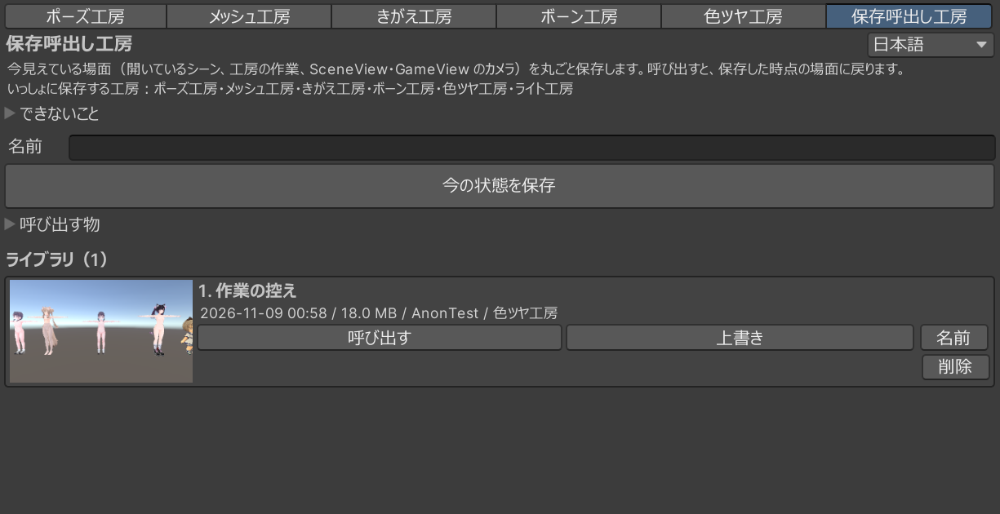

保存した時点へ戻る
- 開いているシーン
- シーンが使う工房の作業用素材
- 対応する工房の記録済みの値や状態
- Scene ビューと Game ビューのカメラ（選択している場合）
GP25 · SCENE / WORK / VIEW
シーン、対応する工房の作業、カメラをひとつのスロットに保存します。別の案を試したあとも、保存した時点の景色へ戻れます。
保存の手順を見るシーン ＋ 工房の作業 ＋ カメラ
保存した場面を呼び出すとき、現在の状態もひとつ預かります。呼び出しが合わなければ、その直前へ戻せます。
START HERE
Tools › Hozon Koubo › Open
ほかの工房にある切り替えの行からも開けます。上部には、いっしょに状態を保存できる工房が表示されます。
KEEP A MOMENT
「名前」欄に分かりやすい名前を入力します。空欄のまま保存すると、日付と時刻が名前になります。
シーン、対応工房の作業ファイル、Scene ビューと Game ビューのカメラが記録されます。連携に対応した工房は窓上部の一覧で確認できます。開いている工房の値や対象は、保存できるものが記録されます。
ライブラリに新しいスロットが加わります。名前・保存日時・容量・シーン名が一覧に表示されます。

RETURN TO A SAVED STATE
呼び出す物（初期状態では両方オン）
いつも呼び出す シーンと工房の作業ファイル
カメラや工房の窓の状態を現在のままにしたいときは、該当項目のチェックを外します。シーンと工房の作業ファイルは、チェックの有無にかかわらず保存時点に戻ります。
確認画面に、上書きするファイル数と、同じ素材を使っているほかのシーンが表示されます。内容を読み、戻してよければ確認画面の［呼び出す］を押します。やめるときは［やめる］を選びます。
完了や注意点は窓の下に表示されます。呼び出したときに工房が入っていない場合、その工房の値は戻らず、ほかの処理は続きます。戻せなかった工房や項目があれば、案内に名前が出ます。
A WAY BACK
直近の呼び出し前の状態が預けてあると、［呼び出す前に戻す］が表示されます。押すと確認画面が出ます。続けると現在の状態は失われるため、残したい作業は先にスロットへ保存してください。確認画面で続けると、呼び出しの直前へ戻ります。
呼び出し前の状態は、ライブラリのスロット数には数えません。
BONE KOUBO
ボーン工房で編集中の複製は、保存した時点の形でシーンに戻ります。一方、引いたボーンの一覧など、ボーン工房の編集の続きは戻りません。
編集を続けるには
呼び出したあと、シーンに戻った複製を保存してから、ボーン工房で選び直してください。呼び出し時に案内が出たら、その内容を確認してから操作します。
WHAT COMES BACK
シーン内のプレハブ変更はシーンと一緒に戻りますが、Project 内にある元のプレハブファイルは対象外です。Unity の Ctrl+Z では、保存呼出し工房の呼び出し全体を取り消せません。色ツヤ工房の編集履歴など、各工房が独自に保存する履歴はその工房の扱いに従います。
SLOTS
最初のスロットを使えます。保存した内容を［上書き］して、同じスロットを使い続けられます。
保存スロット数の制限がなくなり、複数の作業案を残せます。同じ Proキーで、きがえ工房の2組目以降の変換も解放します。
3D 創作スタジオ Pro を見る保存容量はパソコンの空き容量に依存します。保存対象は「戻るもの・戻らないもの」で確認できます。
ONE KEY, TWO WORKSHOPS
無料の3D 創作スタジオ本体に、購入したキーを追加します。保存呼出し工房ときがえ工房で、同じキーを使います。
BOOTH の Pro ページから 3D_CreativeStudio_Pro_Key.zip をダウンロードして展開します。
本体を入れたプロジェクトで 3D_CreativeStudio_Pro_Key.unitypackage を開き、すべてのチェックを入れたまま［Import］します。
読み込み後に工房を開き直します。保存呼出し工房では2つ目以降のスロット、きがえ工房では別の衣装セット・別アバターへの変換を利用できます。
本体が Proキー対応版であることと、Assets/Koubo_Pro/KouboProLicense.bytes があることを確認します。キーの内容は編集せず、購入済みのパッケージを再度 Import してください。キーを外すと無料版の利用枠に戻ります。2つ目以降のスロットを使うときはキーを再度取り込みます。
YOUR WORK, KEPT IN THIS PROJECT
ライブラリは Assets/GP25_HozonKoubo_DataFile/Library に保存されます。製品を更新しても、この保存場所は別に保たれます。